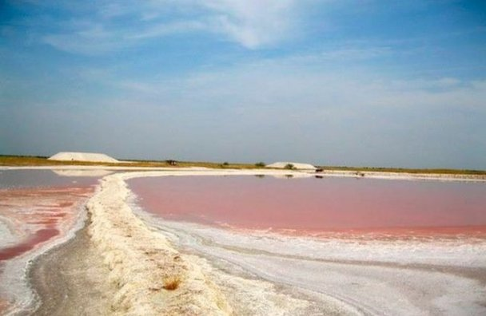
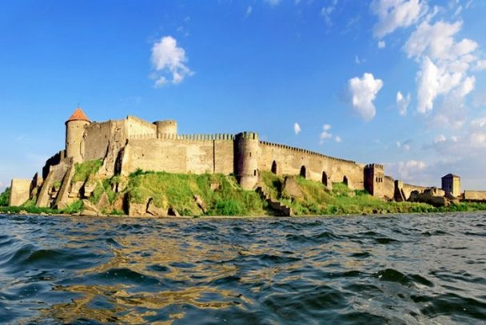
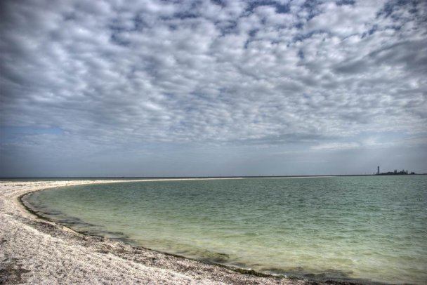
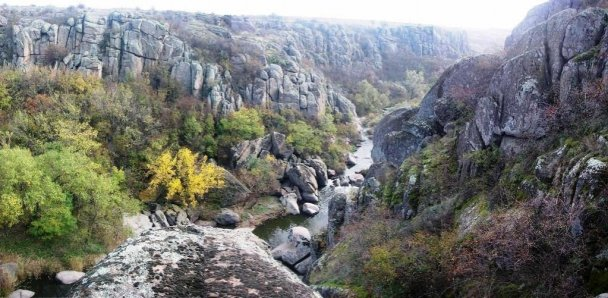

Лемурийское озеро

Лемурийское озеро расположено в Херсонской области возле села Григорьевка. Вода в озере имеет необычный розовый цвет и представляет собой рапу - насыщенный соляной раствор. Она считается лечебной, поскольку содержит минералы, соли хлористого магния и калия, йодистого натрия, бромистого магния. Сивашские грязи также оказывают лечебный эффект.
Считается, что в озере излечиваются болезни, связанные с воспалительными процессами, хронические заболевания суставов – артриты и артрозы, а также проблемы, связанные с кожей. В литре воды из Лемурийского озера содержится на пятьдесят граммов больше соли, чем в Мертвом море. Также считается, что лечебная вода украинского "мертвого моря" омолаживает.
Аккерманская крепость

Белгород-Днестровская крепость или Аккерманская крепость была построена на руинах греческого города Тира. Это историческое место входит в список чудес Украины. Памятник истории и градостроительства XIII—XV столетий является одним из наиболее сохранившихся на территории Украины.
Аккерманская крепость застала правление князей Киевской Руси, Венгерского королевства и Галицко-Волынского княжества, что позволяет окунуться в исторические события тех годов.
Бирючий Остров

Коса в южной части Федотовой косы расположена в западной части Азовского моря и относится к Херсонской области Украины, хотя прямой связи по суше с основной территорией области не имеет - их разделяет Утлюкский лиман.
По многочисленным находкам многие ученые считают, что в окрестностях этой косы некогда обитали царские скифы. Возможно, именно эта коса изображалась на некоторых скифских монетах в 1-м тысячелетии до нашей эры.
Кроме того, на территории уникального уголка азовской природы создан Азово-Сивашский национальный природный парк, в котором насчитывается более тысячи оленей, делая это место – идеальным для поклонников Бэмби!
Актовский каньон

Каньон на реке Мертвовод вблизи села Актово Вознесенского района Николаевской области представляет собой уникальный комплекс лесной и водной экосистем с ансамблем скал и гранитных валунов, единственный в Европе, который по своим геолого-ландшафтным показателям в миниатюре с огромной точностью во времени образования напоминает знаменитые каньоны северной Америки.
Актовский каньон, который также называют Долиной Дьявола, привлекает туристов со всей Европы благодаря уникальной природной красоте.